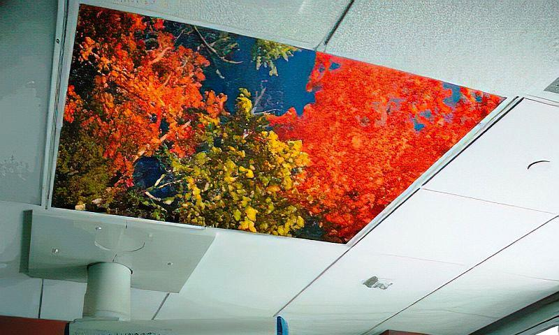
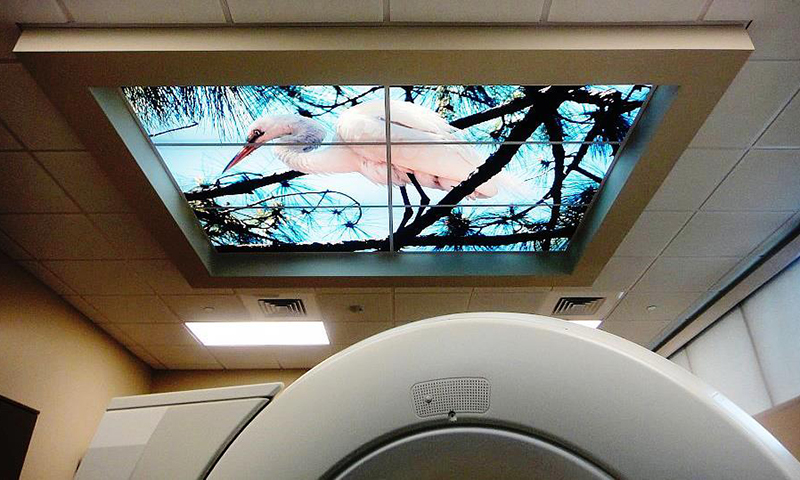
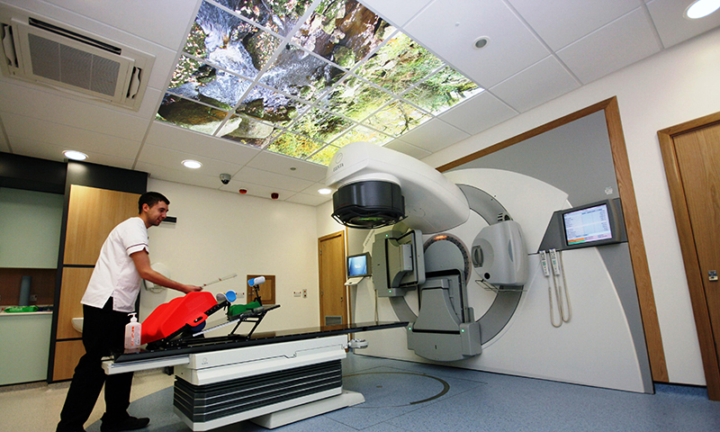

What Makes Medical Murals the Best in the Industry?
Advanced Printing
We use the latest technology printer available anywhere in the world. Medical Murals new UV Printing System costs 1.5 million dollars and has ultra-high resolution with special ink blends to produce life-like murals from any of our 100,000 images. Medical Murals sets the bar for Backlit Murals, Luminous Ceiling Tile and Artificial Skylights or Artificial Windows.

Quality First
Medical Murals prints directly onto the acrylic – not a Duratrans type film – which will fade, bubble, peel, and yellow from the lights. Additionally, Duratrans type products are adhered to Plexiglas with a glue that will give off toxic smoke gas. Companies selling Duratrans typically won’t warranty against fade for more than 6 months. Our products look like a 3D Mural.
.jpg)
Safety
Medical Murals are produced from genuine Bayer® Acrylic Sheet which exhibits outstanding optical properties, uniform thickness and better light disbursement. For fire safety reasons, we use a Health-care Grade Acrylic, which provides a Flammability Rating of 1.20" / Min and an ignition temperature of over 820° F.

True Health-Care Products
All Medical Murals contain a “light activated” broad-spectrum antimicrobial on the panels that provides resistance against the growth of mold, mildew, fungi, yeas, algae and odor or stain causing bacteria. It doesn’t cost anymore to buy from Medical Murals.
